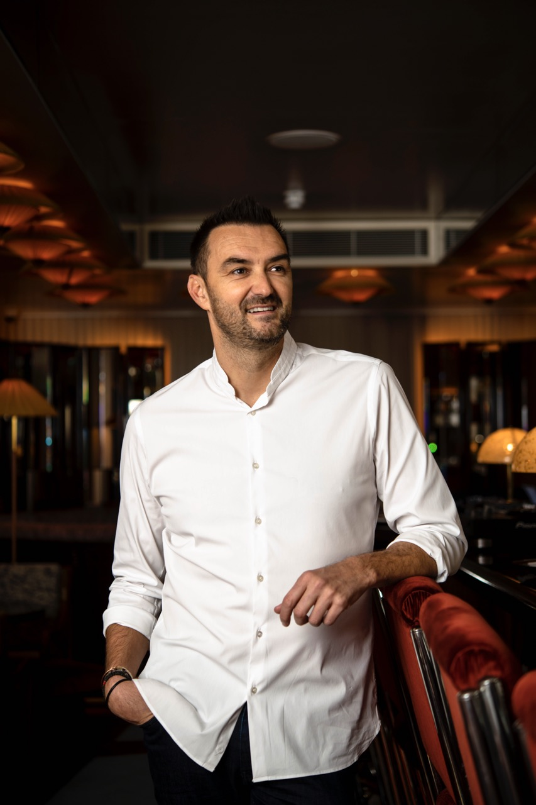
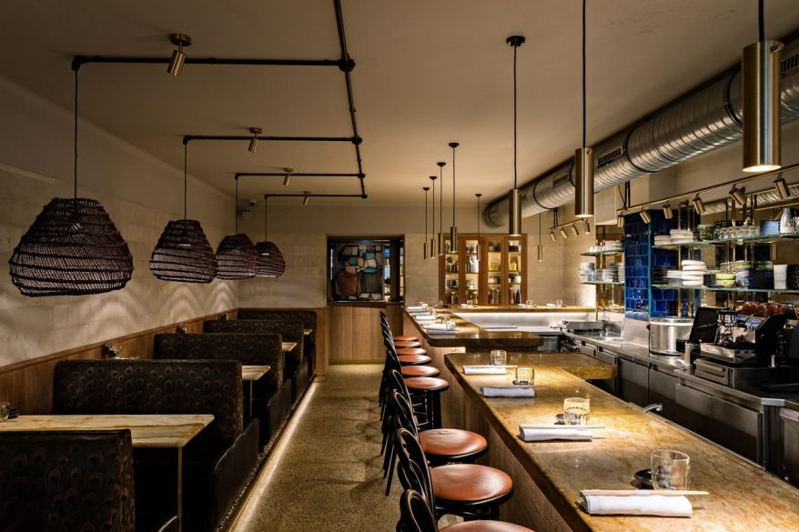
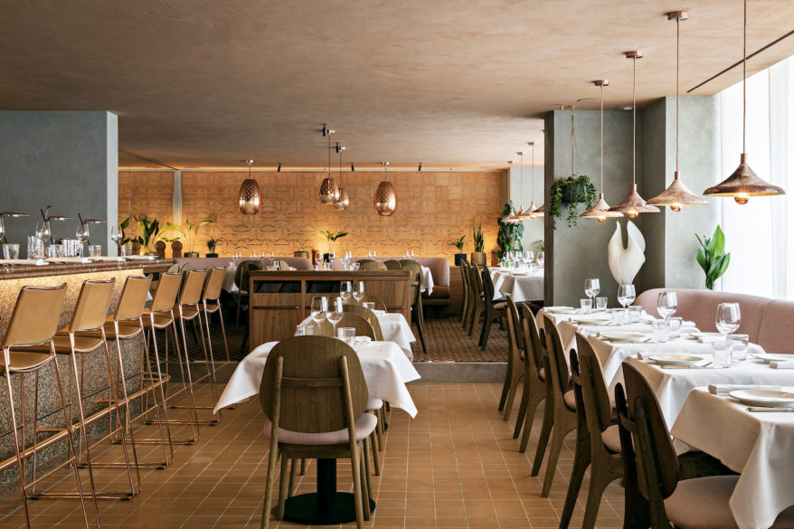
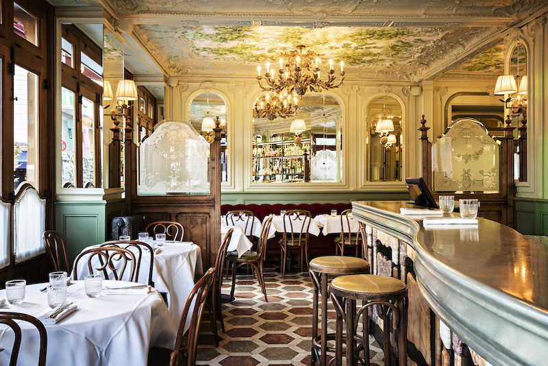

Le Chef
Cyril Lignac s’amuse autant à inventer qu’à réinventer, faire briller le répertoire classique parisien, visiter de nouvelles terres avec attention et donner de l’éclat aux soirées festives qui se prolongent.
Un style gourmand, à la technique assurée, assumant autant l’héritage culinaire français que sa curiosité pour la richesse des cuisines étrangères.
« Mon coeur de métier, c’est cuisinier, d’imaginer des plats qui racontent des histoires. »
Les Restaurants
EN SAVOIR PLUS

Bar des Prés
Paris Londres

Ischia
Paris 15
